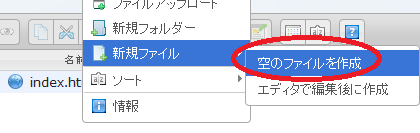
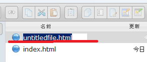
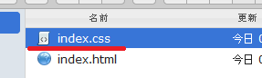
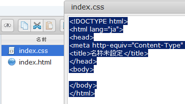
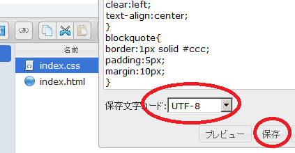
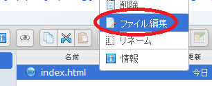
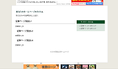

簡単な無料ホームページの作り方
はじめてホームページを作る際、テンプレートを一から作成するのは困難なため、当サイトのサンプルを使用して実際に作成してみるとよいでしょう。
ここでは「index.html」と「index.css」のテンプレートのサンプルを使用して、無料ホームページスペースのヤフーのジオシティーズで作ることを例にご紹介します。
（追記：Yahoo!ジオシティーズは、2019年3月末でサービス終了しました。）
スタイルシート（CSSファイル）の作り方
まず、デザインの部分を指定するスタイルシート（CSSファイル）の作り方ですが、右クリックで「空のファイル」を新規に作成しましょう。

すると、自動でファイル名が作成されるかと思います。

これを「index.css」のファイル名に変更します。

この作成した「index.css」のファイルに、次のソースを上書きします。
右クリックで「ファイル編集」を選択するとデフォルトで挿入されている内容が表示されますが、これを上のソースですべて上書き保存してください。

保存する際、文字コードは「UTF-8」を選択してください。

これでスタイルシートは完成しました。
HTMLファイルもコピペで簡単作成
次に、コンテンツの部分のHTMLファイルを作りますが、同じようにコピペで作成します。
HTMLファイルは、こちらのソースをコピー＆ペーストして作成してください。
HTMLファイルの中身
右クリックで「ファイル編集」を選択し、デフォルトで記載されている内容を上のソースを使って全て上書き保存します。

デフォルトで入力されている内容が上書きされ、現在表示されているページ内容はこちらのテンプレートですべて置き換わることになります。
ファイル名はそのまま「index.html」で保存します。
文字コードはこちらも「utf-8」を選択してください。
このCSSファイルとHTMLファイルを作成すれば、とりあえずはトップページが表示されます。そのまま作れば、テンプレートはこのホームページとほぼ同じ構成になるはずです。

無料テンプレートは、こちらのサイトにも多少ありますのでご自由にお使いください。
あとは「index.html」ファイルに書かれている「あなたのホームページ」などの文字を、実際のサイト名などに書きかえていけばよいでしょう。
ちなみに、まったく同じ作り方でfc2の無料ホームページで作成した場合、このような小さめの広告になります。
fc2の無料ホームページで作成した場合の広告

どちらのホームページスペースで作成しても大差はないかとは思いますが、ジオシティーズの場合は有料版にしないと広告が目立ってしまうかもしれません。